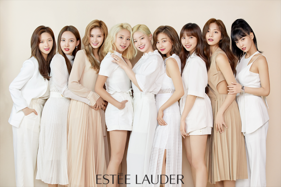

인사말을 할 때 특이한 포즈를 취하는데 양손 검지 손가락을 펴서 1을 만들어서 얼굴 좌우에 대는 것이다. 이 포즈는 왼손 검지 손가락으로 1, 두 눈을 00으로 하여서 100을 만들고, 오른손 검지 손가락으로 1을 만들어서 ONE IN A MILLION을 형상화한 것이다. 데뷔 초기 몇 번 인사 포즈에 관한 해설을 했지만 이해하기가 쉽지 않아서인지 반응은 뜨뜻미지근했다. 하지만 2017년 11번가의 광고 모델이 되면서 이 포즈가 자연스럽게 숫자 11을 의미하는 것처럼 보이기 때문에 광고와 모델이 잘 들어맞았다는 평을 받기도 했다. 멤버들의 파이팅 구호는 TWICE! TWICE! 잘하자!이다. TWICE의 뜻처럼 그룹명을 두 번 외치고, 잘하자라는 구절은 사실 막내의 명언 덕분에 탄생한 구호이다. 쯔위가 SIXTEEN 게릴라 콘서트 홍보미션 도중 카페에서 빙수를 먹다가 뜬금없이 자라자.라고 하는 바람에.. 너무 뜬금포인데다 서툰 발음과 합쳐져 임팩트가 하도 강하다 보니 멤버들이 따라하면서부터 구호로 정착되었다.
멤버들이 제일 좋아하는 팬들의 응원 구호는 멤버들 이름을 차례대로 부르는 것이다. 나이순대로 임나연-유정연-모모짱-사나짱-박지효-미나짱-김다현-손채영-조쯔위 One in a MillionTT에선 도입부에, KNOCK KNOCK에선 곡이 끝날 때, LIKEY에서는 모모로 시작하는 댄스 브레이크에서 사용하는 구호이다. 특징은 멤버 전원의 이름을 3글자로 맞춰서 나이 순서대로 부른다. 한국인 멤버는 성까지 붙이고, 성의 글자수가 다양한 일본 멤버는 성은 생략하고 이름 뒤에 짱을 붙이며 쯔위는 조쯔위로 부른다. 멤버 전원의 이름을 연창한 후에 'One in a Million'까지 붙이는데 사실 멤버 수도 많고 나이순서로 외워야 하기 때문에 상당히 고난도이다. 이후 각 노래마다 응원문구가 하나씩 붙는데 'TT-세상에 단 하나뿐인 TWICE!', 'Knock Knock-내 맘을!', 'Likey-라이키를 눌러줘! TWICE!', 'Heart Shaker-내 심장을 흔들어! TWICE!', 'What is Love?-내 사랑은 바로 너! TWICE!', ' Yes or Yes- 내 대답은 하나야 Y.E.S. TWICE!', 'FANCY- 지금 너에게로 갈래 FANCY, TWICE!'이고, 'Feel Special-눈부시게 사랑해! TWICE!'이다. 하지만 FANCY의 응원 구호는 활동 초반까지만 쓰이고 지금은 나정모 사지미 다채쯔로 바뀌었다. 다현과 나연이 특히 더 좋아하는 듯. 다현은 음악방송 앙코르 때 부른 적이 있다.
자세한 응원법은 여기를 참고하도록 하자.